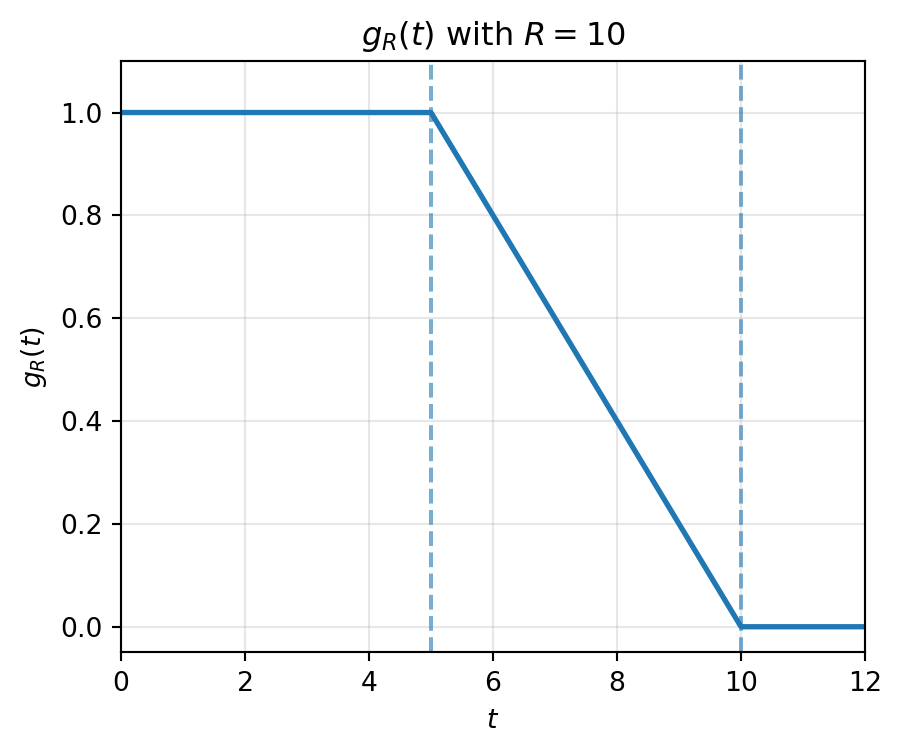

Recall from the previous lecture the Portmanteau Theorem for a metric space \((S,d)\): For \(\mu_n, \mu \in \mathcal{P}(S, \mathcal{B}(S))\), the following are equivalent:
Definition: \(\int_S f \, d\mu_n \to \int_S f \, d\mu \quad \forall f \in C_b(S)\) (\(\mu_n \implies \mu\)).
Lipschitz functions: \(\int_S f \, d\mu_n \to \int_S f \, d\mu \quad \forall f \in \text{Lip}_b(S)\).
Upper bound on closed sets: \(\limsup_{n\to\infty} \mu_n(F) \le \mu(F) \quad \forall \text{ closed } F \subseteq S\).
Lower bound on open sets: \(\liminf_{n\to\infty} \mu_n(G) \ge \mu(G) \quad \forall \text{ open } G \subseteq S\).
In this lecture, we restrict \(S = \mathbb{R}^d\) and establish three additional equivalent characterizations of weak convergence using smaller classes of test functions (\(C_c\), \(C^\infty_c\)) and distribution functions (CDF convergence).
49 Weak Convergence via Continuous Functions with Compact Support
Testing against all bounded continuous functions \(C_b(\mathbb{R}^d)\) can be demanding. We show that it suffices to check test functions in \(C_c(\mathbb{R}^d)\), the space of continuous functions with compact support: \[
C_c(\mathbb{R}^d) = \{ f \in C(\mathbb{R}^d) : \text{supp}(f) \subseteq K \text{ for some compact } K \subseteq \mathbb{R}^d \}.
\]
Lemma 49.1 (Lemma: Asymptotic Concentration on Bounded Balls) If \(\mu_n \implies \mu\) on \(\mathbb{R}^d\) (or if \(\int f \, d\mu_n \to \int f \, d\mu\) for all \(f \in C_c(\mathbb{R}^d)\)), then: \[\lim_{R \to \infty} \inf_{n} \mu_n(\bar{B}_R) = 1\] where \(\bar{B}_R = \{ x \in \mathbb{R}^d : |x| \le R \}\) is the closed ball of radius \(R\).
Proof (Proof of Lemma 49.1). Only the weaker hypothesis is used: we assume \(\int f \, d\mu_n \to \int f \, d\mu\) for every \(f \in C_c(\mathbb{R}^d)\).
For \(R > 0\), construct a continuous cutoff function \(\psi_R \in C_c(\mathbb{R}^d)\): \[
\psi_R(x) = g_R(|x|), \quad \text{where } g_R(t) =
\begin{cases}
1, & t \le R/2, \\
1 - \frac{t - R/2}{R/2}, & R/2 \le t \le R, \\
0, & t > R.
\end{cases}
\] It is continuous because \(g_R\) is piecewise linear with matching values at \(t = R/2\) and \(t = R\), and \(x \mapsto |x|\) is continuous; its support lies in the compact set \(\bar{B}_R\).
Using Python, we can generate the plot of \(g_R(t)\) for \(R = 10\):
import numpy as npimport matplotlib.pyplot as pltR =10t = np.linspace(0, 1.2* R, 1000)g_R = np.where( t <= R /2,1, np.where( t <= R,1- (t - R /2) / (R /2),0 ))plt.figure(figsize=(5, 4))plt.plot(t, g_R, linewidth=2)plt.axvline(R /2, linestyle="--", alpha=0.6)plt.axvline(R, linestyle="--", alpha=0.6)plt.xlabel(r"$t$")plt.ylabel(r"$g_R(t)$")plt.title(rf"$g_R(t)$ with $R={R}$")plt.ylim(-0.05, 1.1)plt.xlim(0, 1.2* R)plt.grid(alpha=0.3)plt.show()

Figure 49.1: Cutoff function \(g_R(t)\) for \(R=10\)
This satisfies \(\mathbf{1}_{\bar{B}_{R/2}} \le \psi_R \le \mathbf{1}_{\bar{B}_R}\): indeed \(\psi_R = 1\) on \(\bar B_{R/2}\), \(0 \le \psi_R \le 1\) everywhere, and \(\psi_R = 0\) off \(\bar B_R\). Integrating gives: \[\int_{\mathbb{R}^d} \psi_R \, d\mu_n \le \int_{\mathbb{R}^d} \mathbf{1}_{\bar{B}_R} \, d\mu_n = \mu_n(\bar{B}_R)\]
Since \(\bar{B}_{R/2} \uparrow \mathbb{R}^d\) as \(R \to \infty\), continuity from below gives \(\mu(\bar{B}_{R/2}) \uparrow 1\).
From \(\liminf_n\) to \(\inf_n\). Fix \(\epsilon > 0\). Choose \(R_0\) with \(\mu(\bar{B}_{R_0/2}) > 1 - \epsilon/2\), so that \(\liminf_{n\to\infty}\mu_n(\bar{B}_{R_0}) \ge 1 - \epsilon/2 > 1 - \epsilon\). Hence there is \(N\) with \[\mu_n(\bar{B}_{R_0}) > 1 - \epsilon \qquad \text{for all } n \ge N.\] The remaining indices \(n = 1, \dots, N-1\) are finitely many, and for each of them \(\mu_n(\bar{B}_r) \uparrow 1\) as \(r \to \infty\), so we may pick \(R_n\) with \(\mu_n(\bar{B}_{R_n}) > 1 - \epsilon\). Setting \(R^* := \max\{R_0, R_1, \dots, R_{N-1}\}\) and using monotonicity of \(r \mapsto \mu_n(\bar B_r)\): \[\inf_{n} \mu_n(\bar{B}_{R^*}) \ge 1 - \epsilon.\]
The map \(R \mapsto \inf_n \mu_n(\bar{B}_R)\) is nondecreasing and bounded by \(1\), so its limit as \(R \to \infty\) exists and is at least \(1 - \epsilon\). As \(\epsilon > 0\) was arbitrary, \[\lim_{R \to \infty} \inf_n \mu_n(\bar{B}_R) = 1. \qquad \blacksquare\]
Theorem 49.1 (\(C_c(\mathbb{R}^d)\) Characterization) Let \(\mu_n, \mu \in \mathcal{P}(\mathbb{R}^d, \mathcal{B}(\mathbb{R}^d))\). Then \(\mu_n \implies \mu\) if and only if: \[\int_{\mathbb{R}^d} f \, d\mu_n \longrightarrow \int_{\mathbb{R}^d} f \, d\mu \quad \forall f \in C_c(\mathbb{R}^d)\]
\((\implies)\): Immediate since \(C_c(\mathbb{R}^d) \subseteq C_b(\mathbb{R}^d)\).
\((\impliedby)\): Let \(f \in C_b(\mathbb{R}^d)\) with \(\|f\|_\infty < \infty\). Truncate \(f\) using the cutoff function \(\psi_R \in C_c(\mathbb{R}^d)\) defined in Lemma 49.1: \[f_R(x) = f(x) \cdot \psi_R(x) \in C_c(\mathbb{R}^d)\]
We decompose the integration error using a three-term triangle inequality: \[\begin{aligned}
\left| \int f d\mu - \int f d\mu_n \right| &\le \left| \int f d\mu - \int f_R d\mu \right| + \left| \int f_R d\mu - \int f_R d\mu_n \right| \\
&\quad + \left| \int f_R d\mu_n - \int f d\mu_n \right|
\end{aligned}\]
Taking \(\limsup_{n \to \infty}\) on both sides: \[\begin{aligned}
\limsup_{n\to\infty} \left| \int f d\mu - \int f d\mu_n \right| &\le \int |f - f_R| \, d\mu + 0 + \limsup_{n\to\infty} \int |f - f_R| \, d\mu_n
\end{aligned}\]
For the tail integrals, note that \(|f - f_R| = |f|\,(1 - \psi_R)\) and that \(1 - \psi_R\) vanishes on \(\bar{B}_{R/2}\), so \(1 - \psi_R \le \mathbf{1}_{\bar{B}_{R/2}^c}\). Hence, for \(\nu \in \{\mu, \mu_1, \mu_2, \dots\}\): \[\int_{\mathbb{R}^d} |f - f_R| \, d\nu \le \|f\|_\infty \int_{\mathbb{R}^d} (1 - \psi_R) \, d\nu \le \|f\|_\infty \left( 1 - \nu(\bar{B}_{R/2}) \right)\]
Applying this to \(\mu\) and to each \(\mu_n\), the previous display becomes, for every \(R > 0\): \[\limsup_{n\to\infty} \left| \int f d\mu - \int f d\mu_n \right| \le \|f\|_\infty \bigl( 1 - \mu(\bar{B}_{R/2}) \bigr) + \|f\|_\infty \Bigl( 1 - \inf_n \mu_n(\bar{B}_{R/2}) \Bigr)\]
The left-hand side is a single number that does not depend on \(R\). Letting \(R \to \infty\), the first term tends to \(0\) by continuity from below, and the second tends to \(0\) by Lemma 49.1 (whose hypothesis, convergence on \(C_c(\mathbb{R}^d)\), is exactly what we are assuming). Therefore the left-hand side equals \(0\), i.e. \[\int f \, d\mu_n \longrightarrow \int f \, d\mu \quad \text{for all } f \in C_b(\mathbb{R}^d). \qquad \blacksquare\]
50 Weak Convergence via Smooth Test Functions
We can further reduce the test function class to smooth functions with compact support, \(C_c^\infty(\mathbb{R}^d)\): \[
C_c^\infty(\mathbb{R}^d) = \{ f \in C^\infty(\mathbb{R}^d) : \text{supp}(f) \subseteq K \text{ for some compact } K \subseteq \mathbb{R}^d \}.
\]
Corollary 50.1 (Corollary: \(C_c^\infty(\mathbb{R}^d)\) Characterization) Let \(\mu_n, \mu \in \mathcal{P}(\mathbb{R}^d, \mathcal{B}(\mathbb{R}^d))\). Then \(\mu_n \implies \mu\) if and only if: \[\int_{\mathbb{R}^d} f \, d\mu_n \longrightarrow \int_{\mathbb{R}^d} f \, d\mu \quad \forall f \in C_c^\infty(\mathbb{R}^d)\]
\((\implies)\): Since \(C_c^\infty(\mathbb{R}^d) \subseteq C_b(\mathbb{R}^d)\), this direction is immediate from the definition of weak convergence.
\((\impliedby)\): By Theorem 49.1, it suffices to show that convergence over \(C_c^\infty(\mathbb{R}^d)\) implies convergence over \(C_c(\mathbb{R}^d)\).
Fix \(f \in C_c(\mathbb{R}^d)\) supported on a compact set \(K \subset \mathbb{R}^d\). Fix a standard mollifier: a function \(\rho \in C_c^\infty(\mathbb{R}^d)\) with \[\rho \ge 0, \qquad \text{supp}(\rho) \subseteq \bar{B}_1(0), \qquad \int_{\mathbb{R}^d} \rho(u)\,du = 1,\] and set \(\rho_\epsilon(x) := \epsilon^{-d} \rho(x/\epsilon)\), so that \(\rho_\epsilon \ge 0\), \(\text{supp}(\rho_\epsilon) \subseteq \bar{B}_\epsilon(0)\) and \(\int_{\mathbb{R}^d} \rho_\epsilon(u) \, du = 1\) by the change of variables \(u = \epsilon v\). Define the mollified function: \[f_\epsilon(x) = (f * \rho_\epsilon)(x) = \int_{\mathbb{R}^d} f(x - u) \rho_\epsilon(u) \, du = \int_{\bar B_\epsilon(0)} f(x - u) \rho_\epsilon(u) \, du\]
\(f_\epsilon \in C_c^\infty(\mathbb{R}^d)\): writing \(f_\epsilon(x) = \int f(y)\rho_\epsilon(x - y)\,dy\), the integrand is smooth in \(x\) with all derivatives dominated by \(\|f\|_\infty \sup|\partial^\alpha \rho_\epsilon|\,\mathbf{1}_K(y)\), so differentiation under the integral sign is justified and \(\partial^\alpha f_\epsilon = f * \partial^\alpha \rho_\epsilon\). Its support is contained in the compact set \(K + \bar{B}_\epsilon\), since \(f(x-u) = 0\) unless \(x \in K + u\).
Since \(f \in C_c(\mathbb{R}^d)\) is continuous with compact support, it is uniformly continuous on \(\mathbb{R}^d\). Using \(f(x) = \int_{\bar B_\epsilon(0)} f(x)\rho_\epsilon(u)\,du\) (valid because \(\rho_\epsilon\) integrates to \(1\)) and \(\rho_\epsilon \ge 0\): \[
\begin{align*}
\|f - f_\epsilon\|_\infty &= \sup_{x \in \mathbb{R}^d} \left| \int_{\bar B_\epsilon(0)} (f(x) - f(x-u)) \rho_\epsilon(u) \, du \right|\\
&\le \sup_{x \in \mathbb{R}^d} \int_{\bar B_\epsilon(0)} |f(x) - f(x-u)| \, \rho_\epsilon(u) \, du \\
&\le \left(\sup_{x \in \mathbb{R}^d} \sup_{|u| \le \epsilon} |f(x) - f(x-u)|\right) \underbrace{\int_{\bar B_\epsilon(0)} \rho_\epsilon(u) \, du}_{=1} \xrightarrow{\epsilon \to 0} 0
\end{align*}
\] by uniform continuity of \(f\).
Using a three-term inequality, and noting that \(\mu_n, \mu\) are probability measures so \(\int |g| \, d\nu \le \|g\|_\infty\) for any probability measure \(\nu\): \[
\begin{aligned}
\left| \int f \, d\mu_n - \int f \, d\mu \right| &\le \left| \int f \, d\mu_n - \int f_\epsilon \, d\mu_n \right| + \left| \int f_\epsilon \, d\mu_n - \int f_\epsilon \, d\mu \right| \\
&\quad + \left| \int f_\epsilon \, d\mu - \int f \, d\mu \right| \\
&\le \|f - f_\epsilon\|_\infty + \left| \int f_\epsilon \, d\mu_n - \int f_\epsilon \, d\mu \right| + \|f - f_\epsilon\|_\infty.
\end{aligned}
\]
Taking \(\limsup_{n\to\infty}\): since \(f_\epsilon \in C_c^\infty(\mathbb{R}^d)\) and convergence over \(C_c^\infty(\mathbb{R}^d)\) is assumed, the middle term vanishes. Thus: \[
\limsup_{n\to\infty} \left| \int f \, d\mu_n - \int f \, d\mu \right| \le 2 \|f - f_\epsilon\|_\infty \qquad \text{for every } \epsilon > 0.
\]
The left-hand side does not depend on \(\epsilon\), and the right-hand side tends to \(0\) as \(\epsilon \to 0\); hence the left-hand side is \(0\). This proves \(\int f \, d\mu_n \to \int f \, d\mu\) for all \(f \in C_c(\mathbb{R}^d)\), and therefore \(\mu_n \implies \mu\) by Theorem 49.1. \(\blacksquare\)
51 Convergence of Cumulative Distribution Functions (CDFs) on \(\mathbb{R}\)
Every probability measure \(\mu\) on \((\mathbb{R}, \mathcal{B}(\mathbb{R}))\) uniquely corresponds to a right-continuous cumulative distribution function (CDF): \[F(t) = \mu((-\infty, t])\]
For a function \(F: S \to T\), let \(\text{Cont}(F)\) denote the set of continuity points of \(F\), and \(\text{Disc}(F) = S \setminus \text{Cont}(F)\) denote its discontinuity points.
Example 51.1 (CDF Convergence Failure at Discontinuity Points) Let \(a_n = a + \frac{1}{n} \to a\) in \(\mathbb{R}\). The corresponding measures are \(\mu_n = \delta_{a_n}\) and \(\mu = \delta_a\). Their CDFs are: \[
F_n(t) = \delta_{a_n}((-\infty, t]) =
\begin{cases}
1, & t \ge a_n \\
0, & t < a_n
\end{cases} \quad \text{and} \quad F(t) =
\begin{cases}
1, & t \ge a \\
0, & t < a
\end{cases}
\]
Evaluating at \(t = a\):
\(F_n(a) = \mathbf{1}_{\{a_n \le a\}} = 0\) for all \(n \ge 1\).
\(F(a) = \mathbf{1}_{\{a \le a\}} = 1\).
Thus \(F_n(a) \to 0 \neq F(a) = 1\). However, \(t = a\) is a discontinuity point of \(F\) (\(a \notin \text{Cont}(F)\)). For all \(t \neq a\), \(F_n(t) \to F(t)\) holds.
Theorem 51.1 (CDF Characterization of Weak Convergence on \(\mathbb{R}\)) Let \(\mu_n, \mu \in \mathcal{P}(\mathbb{R})\) with CDFs \(F_n(t) = \mu_n((-\infty, t])\) and \(F(t) = \mu((-\infty, t])\). Then \(\mu_n \implies \mu\) if and only if: \[
F_n(t) \longrightarrow F(t) \quad \forall t \in \text{Cont}(F).
\]
\((\implies)\): Let \(t \in \text{Cont}(F)\). Then \(\mu(\{t\}) = F(t) - F(t^-) = 0\). The boundary of \(A = (-\infty, t]\) is \(\partial A = \{t\}\). Since \(\mu(\partial A) = \mu(\{t\}) = 0\), \(A\) is a \(\mu\)-continuity set. By Portmanteau Theorem (Condition 5): \[
F_n(t) = \mu_n((-\infty, t]) \longrightarrow \mu((-\infty, t]) = F(t).
\]
\((\impliedby)\): Since \(F\) is a non-decreasing function on \(\mathbb{R}\), its set of discontinuities \(\text{Disc}(F)\) is at most countable. Thus \(\text{Cont}(F)\) is dense in \(\mathbb{R}\).
Let \(f \in C_c(\mathbb{R})\) with support \(\text{supp}(f) \subseteq [a, b]\). Since \(f\) is continuous with compact support, it is uniformly continuous on \(\mathbb{R}\). Fix \(\epsilon > 0\). Choose \(\delta > 0\) such that \(|x - y| < \delta \implies |f(x) - f(y)| < \epsilon/2\).
Using density of \(\text{Cont}(F)\), construct a partition \(\pi = \{x_0 < x_1 < \dots < x_k\}\) such that:
\(x_j \in \text{Cont}(F)\) for all \(j = 0, 1, \dots, k\).
\(|x_j - x_{j-1}| < \delta\) for all \(j = 1, \dots, k\).
\(x_0 < a\) and \(x_k > b\), so that \([a,b] \subseteq (x_0, x_k]\).
Condition 3 matters because \(a\) and \(b\) themselves may lie in \(\text{Disc}(F)\) and so may be unusable as partition points; density of \(\text{Cont}(F)\) lets us instead pick \(x_0\) slightly below \(a\) and \(x_k\) slightly above \(b\).
Define a step function approximation \(f_\pi\): \[
f_\pi(x) = \sum_{j=1}^k f(x_j) \mathbf{1}_{(x_{j-1}, x_j]}(x).
\]
Then \(\|f - f_\pi\|_\infty \le \epsilon/2\): for \(x \in (x_{j-1}, x_j]\) we have \(|x - x_j| < \delta\), so \(|f(x) - f_\pi(x)| = |f(x) - f(x_j)| < \epsilon/2\); and for \(x \notin (x_0, x_k]\) both \(f(x)\) and \(f_\pi(x)\) vanish, by condition 3 and \(\text{supp}(f) \subseteq [a,b]\). Therefore, for any probability measure \(\nu\): \[
\left| \int_{\mathbb{R}} f \, d\nu - \int_{\mathbb{R}} f_\pi \, d\nu \right| \le \int_{\mathbb{R}} |f - f_\pi| \, d\nu \le \frac{\epsilon}{2}.
\]
Taking \(\limsup_{n\to\infty}\), the middle term vanishes by the previous display: \[
\limsup_{n\to\infty} \left| \int f d\mu_n - \int f d\mu \right| \le \epsilon.
\]
The left-hand side does not depend on \(\epsilon\), so letting \(\epsilon \downarrow 0\) gives \(\int f d\mu_n \to \int f d\mu\) for all \(f \in C_c(\mathbb{R})\). By Theorem 49.1, \(\mu_n \implies \mu\). \(\blacksquare\)
51.1 Takeaways
Smaller test-function classes suffice on \(\mathbb{R}^d\). On \(\mathbb{R}^d\), weak convergence \(\mu_n \implies \mu\) is equivalent to \(\int f \, d\mu_n \to \int f \, d\mu\) for all \(f\) in any of the classes \[C_c^\infty(\mathbb{R}^d) \subsetneq C_c(\mathbb{R}^d) \subsetneq C_b(\mathbb{R}^d), \qquad C_c^\infty(\mathbb{R}^d) \subsetneq \text{Lip}_b(\mathbb{R}^d) \subsetneq C_b(\mathbb{R}^d).\] Note that \(C_c\) and \(\text{Lip}_b\) are not comparable: \(x \mapsto \sqrt{|x|}\) cut off near the origin is in \(C_c(\mathbb{R})\) but is not Lipschitz, while \(x \mapsto \sin x\) is in \(\text{Lip}_b(\mathbb{R})\) but has no compact support. The gain in using \(C_c\) and \(C_c^\infty\) is that their members are compactly supported, hence analytically more tractable.
Tightness underlies the reduction from \(C_b\) to \(C_c\). By Lemma 49.1, weak convergence forces \(\lim_{R\to\infty} \inf_n \mu_n(\bar{B}_R) = 1\): the sequence concentrates uniformly on large balls. This allows tail contributions to be controlled by \(\|f\|_\infty \cdot \sup_n (1 - \mu_n(\bar{B}_{R/2})) \to 0\) as \(R \to \infty\).
Mollification gives the further reduction from \(C_c\) to \(C_c^\infty\). Every \(f \in C_c(\mathbb{R}^d)\) is approximated uniformly by \(f_\epsilon = f * \rho_\epsilon \in C_c^\infty(\mathbb{R}^d)\), with \(\|f - f_\epsilon\|_\infty \to 0\) as \(\epsilon \to 0\) by uniform continuity of \(f\). This reduction is essential for Fourier-analytic methods (e.g., characteristic functions), which test against smooth oscillatory functions.
On \(\mathbb{R}\), weak convergence is equivalent to pointwise CDF convergence at continuity points. By Theorem 51.1, \(\mu_n \implies \mu\) if and only if \(F_n(t) \to F(t)\) for all \(t \in \text{Cont}(F)\). Convergence can fail at discontinuity points of \(F\), as shown in Example 51.1 with \(\delta_{a+1/n} \implies \delta_a\). Since any monotone \(F\) has at most countably many discontinuities, the exceptional set excluded from the convergence requirement is at most countable, and \(\text{Cont}(F)\) is dense in \(\mathbb{R}\).
The full Portmanteau equivalence on \(\mathbb{R}^d\) now has eight conditions. This lecture adds three items to the five Portmanteau conditions from Lecture 22.1: testing against \(C_c(\mathbb{R}^d)\), testing against \(C_c^\infty(\mathbb{R}^d)\), and (in dimension \(d = 1\)) CDF convergence at all continuity points of the limit. Each is strictly more convenient to verify than testing all of \(C_b(\mathbb{R}^d)\).